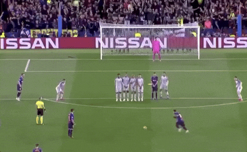

CORINTHIANS
Corinthians anuncia a contratação de Lionel Messi

Em uma jogada ousada e histórica, o Sport Club Corinthians Paulista anunciou oficialmente a contratação do astro argentino Lionel Messi. O acordo, que pegou fãs e especialistas de surpresa, foi fechado por um valor recorde e marca um novo capítulo na história do clube paulista. Messi, que brilhou por mais de uma década no Barcelona e recentemente fez história no futebol internacional com o Paris Saint-Germain e no Inter Miami, chega ao Corinthians com um contrato de dois anos. O atleta de 37 anos aterrissou no Brasil em busca de novos desafios e afirmou estar empolgado com a oportunidade de jogar no futebol brasileiro, um dos mais tradicionais e vibrantes do mundo.
"É um sonho para mim, poder jogar em um clube tão grande como o Corinthians. Sei da paixão da torcida e da história desse time, e estou ansioso para dar o meu melhor em campo e conquistar títulos aqui", disse Messi durante a coletiva de apresentação no Parque São Jorge, que contou com uma grande presença da imprensa. O clube paulista, que atravessa um momento de renovação em sua equipe, vê a chegada de Messi como uma chance de não só fortalecer seu elenco, mas também ampliar sua visibilidade global. "Lionel Messi é um dos maiores jogadores da história do futebol e sua chegada ao Corinthians é um marco. Estamos muito felizes com a sua vinda e temos certeza de que ele vai fazer a diferença dentro de campo", afirmou o presidente do Corinthians, Augusto Melo.
